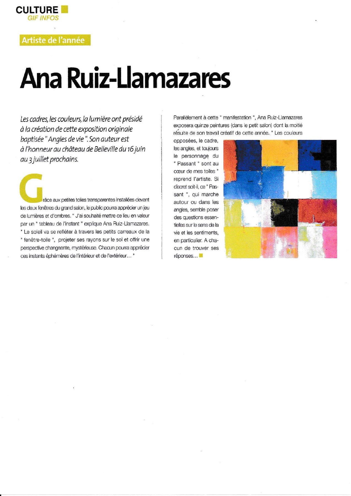
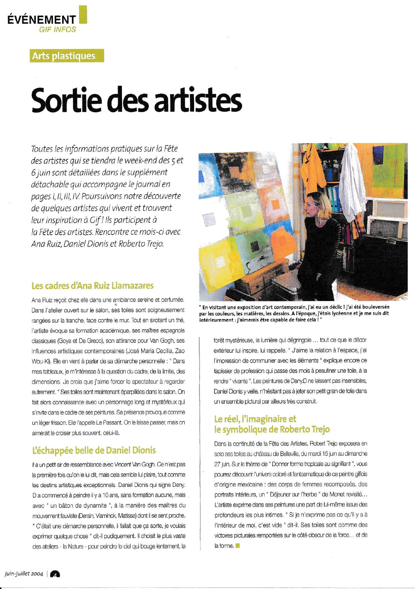
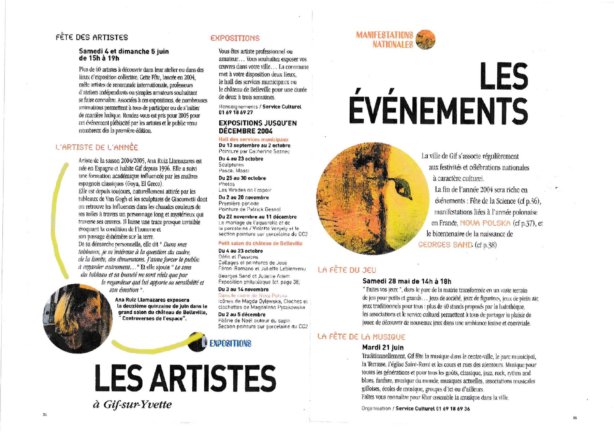
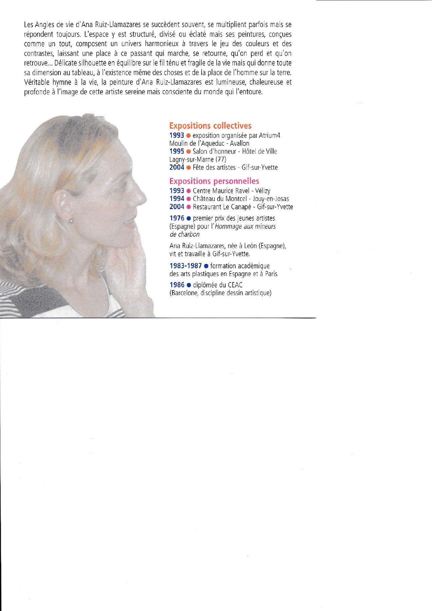
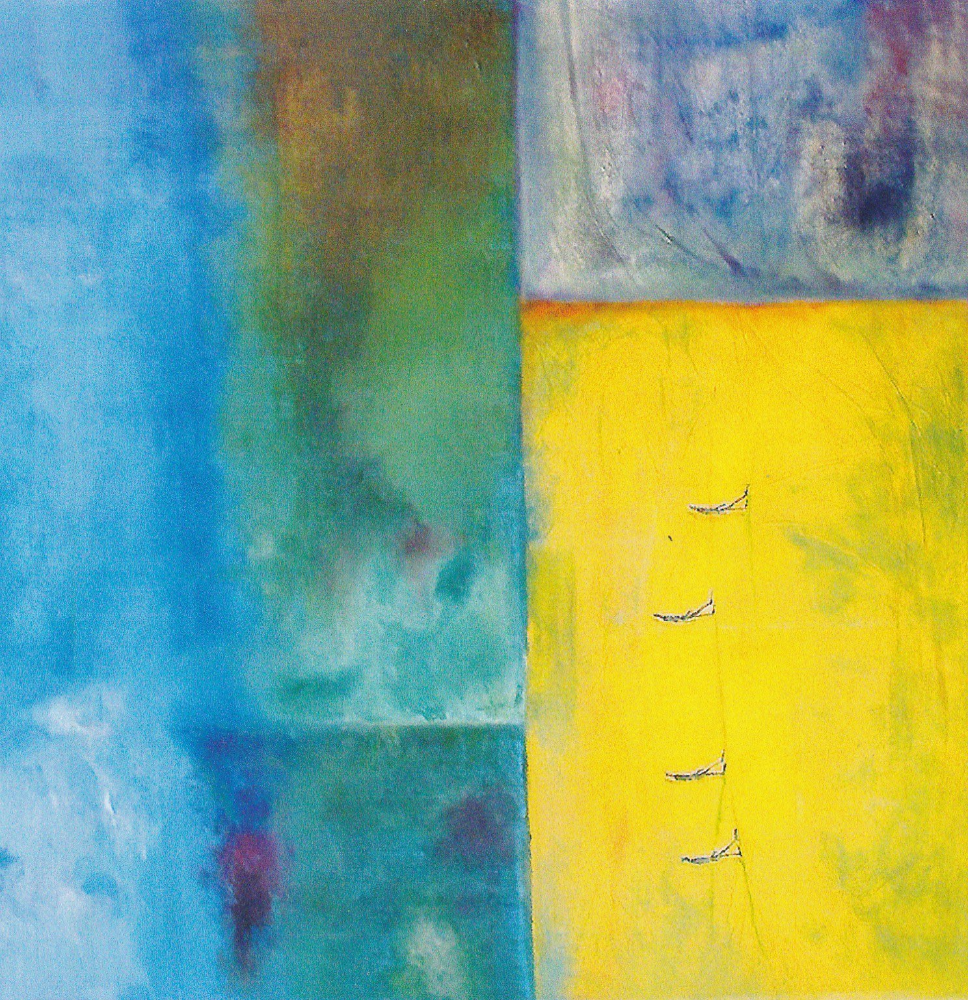
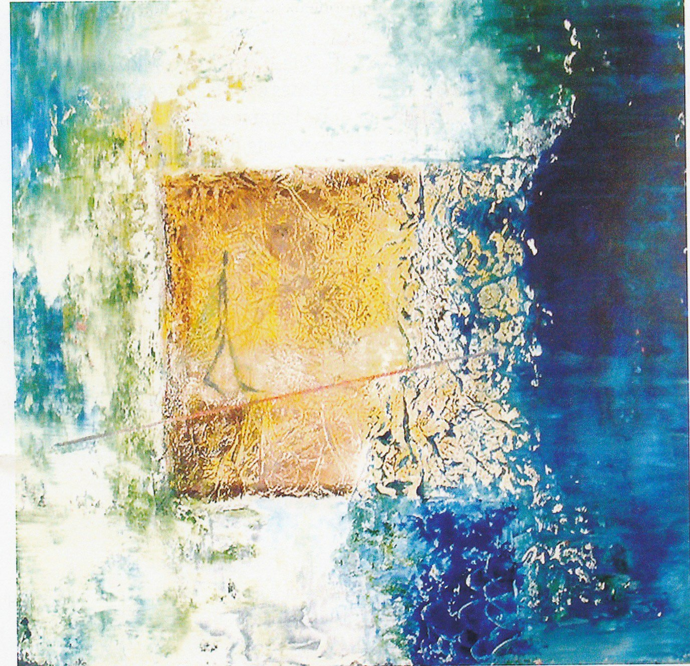
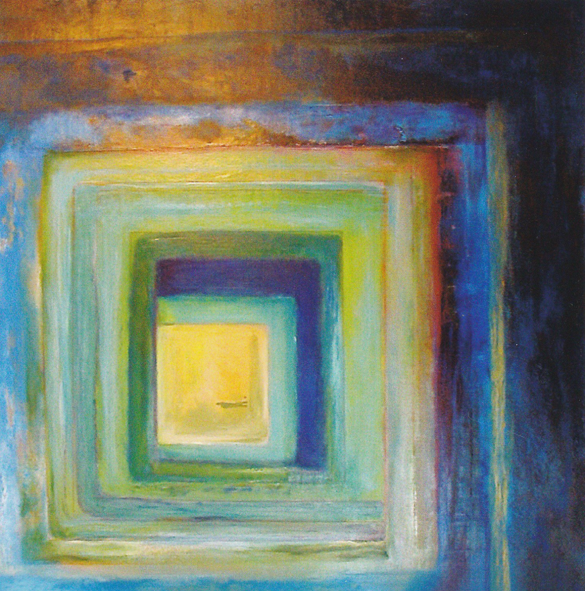

年度艺术家 — Ana Ruiz-Llamazares
因展览《Angles de vie》（6 月 16 日至 7 月 3 日）在贝勒维尔城堡受到瞩目。框、色彩、光线以及神秘的“过客”形象贯穿她的画布。刊登于 Gif-sur-Yvette 文化简报。
点击放大 →关于 Ana Ruiz Llamazares 创作的媒体报道与评论文章。点击文章即可放大。

因展览《Angles de vie》（6 月 16 日至 7 月 3 日）在贝勒维尔城堡受到瞩目。框、色彩、光线以及神秘的“过客”形象贯穿她的画布。刊登于 Gif-sur-Yvette 文化简报。
点击放大 →
艺术家节（2004 年 6 月 5–6 日）之际，于通往客厅的画室中的艺术家肖像。“在我的画中，我关注框、边界与尺度的问题。我想我喜欢迫使观者换一种方式去看。”
点击放大 →
Gif-sur-Yvette 艺术家节节目单（2004 年 6 月 4 日周六与 5 日周日）。Ana Ruiz Llamazares 获评“2004–2005 年度艺术家”，并将于 2005 年 6 月在贝勒维尔城堡大厅举办展览。
点击放大 →
“Ana Ruiz-Llamazares 的《生活的角度》常常接连出现，有时层层叠加，却始终彼此呼应。[…] Ana Ruiz-Llamazares 的绘画是一首真正的生命赞歌，明亮、温暖而深邃。”附艺术家简历与展览列表。
点击放大 →
Angles de vie — 布面丙烯，约 2004–2005

综合材料 — 丙烯与肌理，约 2004–2005

框 — 布面丙烯，约 2004–2005